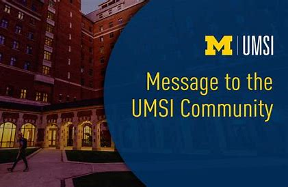

Welcome to the UMSI Page!
On this Page You Can Find Anything Related to UMSI!
At the University of Michigan School of Information (UMSI), we are committed to supporting our students' academic success by offering a wide array of resources and services. Our academic advising team provides personalized guidance to help you navigate your curriculum, select courses, and address any academic challenges or questions you may encounter during your studies. UMSI students also have access to the extensive collections and study spaces within the University Library system, offering both digital and physical resources essential for research and coursework. Additionally, our specialized tutoring services and the UMSI Writing Center are available to support you in mastering complex subjects and enhancing your written communication skills. By utilizing these academic resources, UMSI students can thrive in their studies and achieve their educational goals.
The University of Michigan School of Information (UMSI) is the informatics and information science school of the University of Michigan, a public research university in Ann Arbor, Michigan. We offer baccalaureate, magisterial, and doctoral degrees.
Interested in Internships, Resume/Cover Letter Coaching, or Career Coaching? You came to the right place! Meet with a career advisor today with the links below!
Make sure to follow our Instagram to find out the latest information about our social and networking events!!